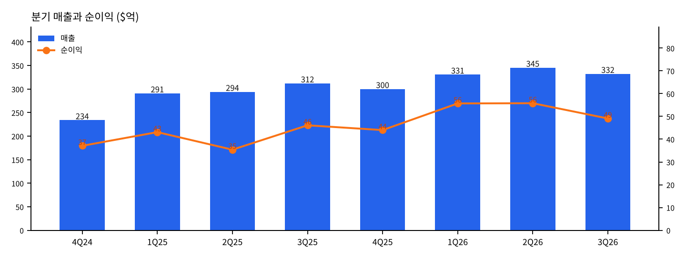
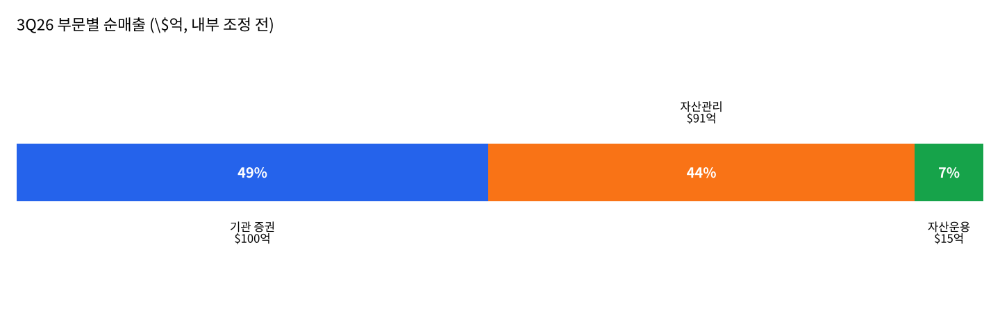
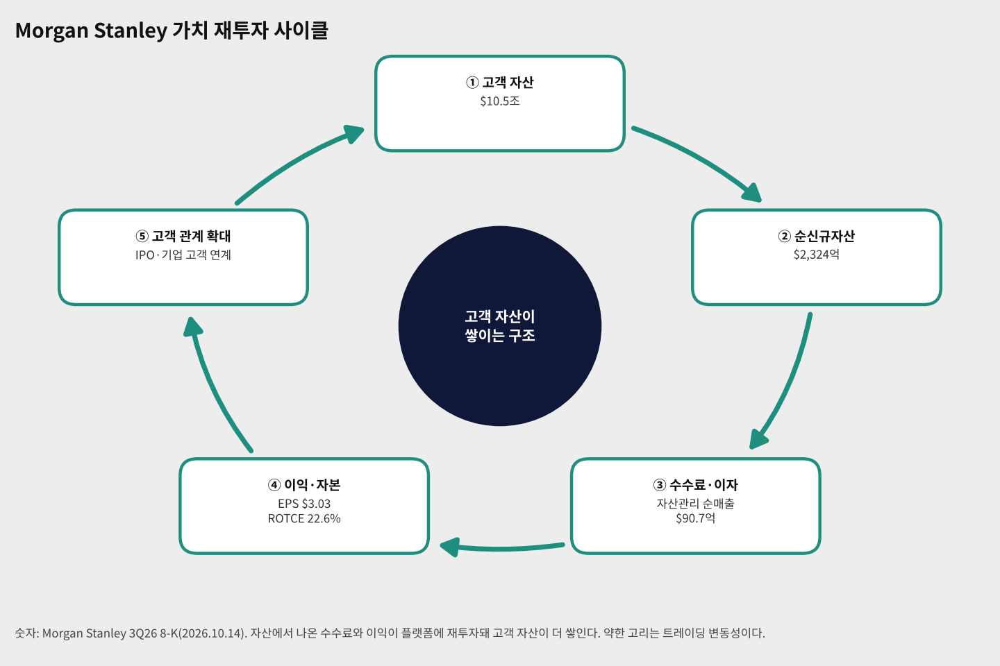

Morgan Stanley는 기관투자자 대상 증권 사업과 개인·기업 자산관리, 자산운용을 하는 금융그룹이다. 이번 분기 IPO 연계 자금 유입이 자산관리 순신규자산을 크게 늘렸다.
| 항목 | 내용 |
|---|---|
| 종목 | Morgan Stanley (MS) · NYSE · 금융(투자은행·자산관리) · 뉴욕 |
| 멀티플 | PER·P/S는 08·09 항목 표 참조 |
| 최근 분기(3Q26) | 순매출 $203.4억, EPS $3.03, ROTCE 22.6% |
| 고객 자산 | $10.5조(자산관리·운용 합계) |
| 직원 수 | 약 83,000명(트레이딩뷰) |
| 직책 | 인물 | 역할·특징 |
|---|---|---|
| 회장·CEO | 테드 픽(Ted Pick) | '통합 기업(Integrated Firm)'으로 사업 간 연결을 강조 |
| CFO | 샤론 예샤야(Sharon Yeshaya) | (확인 필요: 이번 조사에서 직접 인용 없음) |
경영 스타일: '자산관리 + 트레이딩의 통합'. 자산관리 대출·예금과 기관 증권을 연결해 수익 변동성을 줄이는 전략이다.
수수료형 자산 $3.155조, 대출 $2,011억, 경영 자문 채널 중심.
순신규자산과 수수료형 유입으로 반복 수익을 키운다.
다음 실적발표는 세 가지 질문에 답하는 자리다.
1. IPO 연계 순유입이 이어지나?
2. 주식 트레이딩 호조가 유지되나?
3. 자산운용 매출 감소가 멈추나?
한 줄 판정 규칙: 첫 질문(순유입)과 둘째 질문(트레이딩)이 유지되면 약한 고리(변동성 의존)가 풀린다.
일정: 4Q26 실적 발표는 트레이딩뷰 기준 2027.01.14(확인 필요).
| 분기 | 매출 | 순이익 | EPS | 조정 EPS | 특이 사항 |
|---|---|---|---|---|---|
| 4Q24 | $233.8억 | $37.1억 | 2.22 | 2.22 | |
| 1Q25 | $290.9억 | $43.1억 | 2.60 | 2.60 | |
| 2Q25 | $294.1억 | $35.4억 | 2.13 | 2.13 | |
| 3Q25 | $312.1억 | $46.1억 | 2.80 | 2.80 | |
| 4Q25 | $300.0억 | $44.0억 | 2.68 | 2.68 | |
| 1Q26 | $330.8억 | $55.7억 | 3.43 | 3.43 | |
| 2Q26 | $345.4억 | $55.8억 | 3.46 | 3.46 | |
| 3Q26 | $332.3억 | $49.1억 | 3.03 | 3.03 |
3Q26 순매출 $203억(+12%), 순이익 $49.1억, EPS $3.03(회사 8-K, 2026.10.14). 표의 매출은 트레이딩뷰 총수익(이자수익 포함)이라 회사 순매출과 다르다. 조정 EPS를 따로 발표하지 않아 GAAP와 같다. 매출·순이익·EPS(GAAP 희석)는 트레이딩뷰 스캐너, 조정 EPS는 트레이딩뷰 실적 페이지의 Reported 값이다. 분기 정렬은 오래된 분기→최신이다.

흐름 요약: 최근 분기 매출은 $332.3억로 전년 동기 $312.1억 대비 +6.5%, 순이익은 $49.1억(전년 $46.1억)다. 최근 4분기 GAAP EPS는 $12.60, 조정 EPS는 $12.60다.
| 부문 | 내용 | 3Q26 순매출 | 비고 |
|---|---|---|---|
| 기관 증권 | 주식·채권·투자은행 | $100.3억 | 주식 $58.0억(+41%) |
| 자산관리 | 수수료·이자 | $90.7억 | 사상 최대 |
| 자산운용 | 펀드 운용 | $14.6억 | -12% |

기관 증권과 자산관리가 순매출 대부분을 차지한다. 부문 합계는 내부 조정 전 값이라 총 순매출 $203.4억과 다를 수 있다.
Morgan Stanley는 '기관 증권과 자산관리를 연결해 고객 자산을 키우는 것'을 목표로 한다.
| 축 | 내용 |
|---|---|
| 자산관리 | 수수료형 자산 $3.155조 |
| 기관 | 주식·채권·투자은행 |
| 자본 | ROTCE 22.6% |

| 이동평균 | 값 | 종가 대비 | 위치 |
|---|---|---|---|
| 5일선 | $186.02 | -2.6% | 종가 아래 |
| 20일선 | $186.17 | -2.7% | 종가 아래 |
| 50일선 | $190.74 | -5.0% | 종가 아래 |
| 100일선 | $203.24 | -10.9% | 종가 아래 |
| 200일선 | $194.52 | -6.9% | 종가 아래 |
52주 고가 $232.25(2026-07-15)·저가 $152.80(2026-03-12) 범위에서 종가 $181.17는 모든 이동평균선 아래이고.
| 규칙 | 기준 | 현재 값 | 신호 |
|---|---|---|---|
| 장기 추세 필터 | 종가 vs 200일선 | $181.17 < $194.52 | 매도 |
| 중장기 교차 | 50일선 vs 200일선 | $190.74 < $194.52 | 매도 |
| 단기 교차 | 20일선 vs 50일선 | $186.17 < $190.74 | 매도 |
| 돈키언 채널 | 55일 고가 $218.51 / 저가 $176.44 | 중간값 $197.47 아래 | 매도 |
| 1개월 모멘텀 | 21거래일 수익률 | +0.4% (기준 $180.40) | 매수 |
| 3개월 모멘텀 | 63거래일 수익률 | -12.7% (기준 $207.45) | 매도 |
| 6개월 모멘텀 | 126거래일 수익률 | -8.4% (기준 $197.77) | 매도 |
| 12개월 모멘텀 | 252거래일 수익률 | +13.6% (기준 $159.45) | 매수 |
| 종합 (8개 평균) | -0.50 | 매도 |
해석: 매수 신호 2개(1개월 모멘텀, 12개월 모멘텀), 매도 신호 6개(장기 추세 필터, 중장기 교차, 단기 교차, 돈키언 채널, 3개월 모멘텀, 6개월 모멘텀). CTA 점수 -0.50(매도). 14일 ATR $5.86 (3.2%), 52주 고가 $232.25 · 저가 $152.80.
| 가격 | 기준 | 무엇이 바뀌나 |
|---|---|---|
| $218.51 | 55일 고가 | 돌파 시 채널 상단 갱신 |
| $207.45 | 3개월 모멘텀 기준가 | 종가가 이 가격 위면 3개월 신호 매수 |
| $197.77 | 6개월 모멘텀 기준가 | 종가가 이 가격 위면 6개월 신호 매수 |
| $197.47 | 돈키언 중간값 | 55일 채널 중간값 위/아래로 신호가 바뀜 |
| $194.52 | 200일선 | 종가가 이 선 위/아래인지로 장기 추세 신호가 바뀜 |
| $180.40 | 1개월 모멘텀 기준가 | 종가가 이 가격 위면 1개월 신호 매수 |
| $176.44 | 55일 저가 | 이탈 시 채널 하단 갱신 |
| $159.45 | 12개월 모멘텀 기준가 | 종가가 이 가격 위면 12개월 신호 매수 |
가격 수준은 신호가 바뀌는 기준선일 뿐 진입·청산 가격 제안이 아니다. 20일/50일 교차는 이동평균 자체가 움직여 단일 가격으로 표시하지 않았다. 일봉·주봉은 종가 기준 직접 계산(고저 데이터 미사용)이다.
| 악재 요인 | 내용 | 강도 |
|---|---|---|
| 시장 변동성 의존 | 주식 트레이딩 $58.0억이 호조의 핵심 | 중간 |
| IPO 연계 유입 | 순신규자산 절반이 IPO 연계(확인 필요) | 중간 |
| 채권 약세 | 채권 -7% | 참고 |
| 신용 | 3Q 상각 $1.05억 | 참고 |
| 티커 | 회사 | PER(TTM) | PEG | P/S | EPS 성장(YoY) |
|---|---|---|---|---|---|
| MS | Morgan Stanley | 14.4배 | 0.49 | 2.16배 | +29% |
| GS | Goldman Sachs | 12.6배 | 0.31 | 3.73배 | +41% |
| JPM | JPMorgan | 13.6배 | 0.77 | 4.34배 | +18% |
| BAC | Bank of America | 11.7배 | 0.82 | 2.90배 | +14% |
| SCHW | Charles Schwab | 15.8배 | 0.42 | 5.22배 | +38% |
비교 결론: Morgan Stanley PER은 Goldman Sachs·JPMorgan과 비슷한 구간이다.
은행·증권사는 EBITDA와 현금성 자산 구분이 달라 일부 지표를 생략했다. 순부채 계산은 의미가 없다.
| 지표 | 값 | 출처 | 해석 |
|---|---|---|---|
| 현금·단기투자 | – | 트레이딩뷰 스캐너(최근 분기) | |
| 총부채 | $5,296억 | 트레이딩뷰 스캐너(최근 분기) | |
| 순부채(부채−현금) | – | 내 계산 | 현금 대비 부채 부담 |
| 잉여현금흐름(TTM) | $382억 | 트레이딩뷰 스캐너 | |
| TTM 매출 | $1,309억 | 트레이딩뷰 스캐너 |
| 기준 | 매출 | P/S | 비고 |
|---|---|---|---|
| 내 계산(종가 ÷ 최근 4분기 매출 합계) | $1,308.5억 | 2.16배 | 시총은 정렬용 데이터에서만 사용 |
| 동종(트레이딩뷰) | – | GS 3.73배 · JPM 4.34배 · BAC 2.90배 · SCHW 5.22배 | 11.19 |
해석: P/S 3.59배는 Goldman Sachs(3.73배)와 비슷하다.
은행·증권사는 EBITDA를 쓰지 않으므로 ROTCE(22.6%)와 PEG로 본다.
| 지표 | 값 | 산출 |
|---|---|---|
| EBITDA(TTM) | – | 은행·증권사는 EBITDA를 산출하지 않아 생략 |
| EBITDA 마진 | – | EBITDA ÷ TTM 매출(내 계산) |
| FCF 마진 | 29.2% | FCF ÷ TTM 매출(내 계산) |
| PER(GAAP TTM) | 14.4배 | $181.17 ÷ $12.60 |
| PER(조정 TTM) | 14.4배 | $181.17 ÷ $12.60 |
| 방식 | PER | EPS 성장률 | PEG | 판정 |
|---|---|---|---|---|
| GAAP EPS (TTM $12.60) | 14.4배 | +29% ($9.75 → $12.60) | 0.49 | 적극 매수 |
| 조정 EPS (TTM $12.60) | 14.4배 | +29% ($9.75 → $12.60) | 0.49 | 적극 매수 |
판정: GAAP EPS 기준 PEG 0.49 → 0.5 이하(적극 매수 구간) PEG 기준은 1.0 이하 투자 적격, 0.5 이하 적극 매수다. EPS 성장률은 최근 4분기 EPS 합계를 직전 4분기 합계와 비교한 값(내 계산)이고, 일회성 항목이 있으면 조정 EPS 행을 함께 본다.

Morgan Stanley의 사이클: 자산에서 나온 수수료와 이익이 플랫폼에 재투자돼 고객 자산이 더 쌓인다.
| 고리 | 현재 숫자·근거 |
|---|---|
| ① 고객 자산 | $10.5조 |
| ② 순신규자산 | $2,324억 |
| ③ 수수료·이자 | 자산관리 순매출 · $90.7억 |
| ④ 이익·자본 | EPS $3.03 · ROTCE 22.6% |
| ⑤ 고객 관계 확대 | IPO·기업 고객 연계 |
사이클의 특징: 약한 고리는 트레이딩 변동성이다. "(내 해석)"은 보고서 수치가 아닌 해석이다.